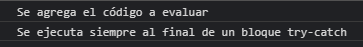
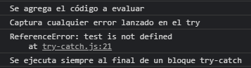
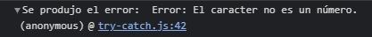

Try, Catch and Finally
1.- Estructura del control de errores
El try contiene el código que será evaluado
El catch contiene los errores en caso de presentarse,
El finally siempre se ejecuta, haya o no errores.
Usando:
try {
console.log('Se agrega el código a evaluar');
} catch (error) {
console.log('Captura cualquier error lanzado en el try');
console.log(error);
} finally {
console.log('Se ejecuta siempre al final de un bloque try-catch');
}

2.- Error generado con (test), ya que no está definida
Entra al catch por tener una variable no definida.
Usando:
try {
console.log('Se agrega el código a evaluar');
test;
console.log('Segundo mensaje');
} catch (error) {
console.log('Captura cualquier error lanzado en el try');
console.log(error);
} finally {
console.log('Se ejecuta siempre al final de un bloque try-catch');
}

3.- Error generado con el tipo de dato
Usando (isNaN) para conocer si es un número.
throw para errores personalizados
console.trace(), indica la línea de error.
Usando:
try {
let numero = 'lo';
if (isNaN(numero)) {
throw new Error('El caracter no es un número.')
}
console.log(numero * numero);
} catch (error) {
console.trace(`Se produjo el error: ${error}`);
}
